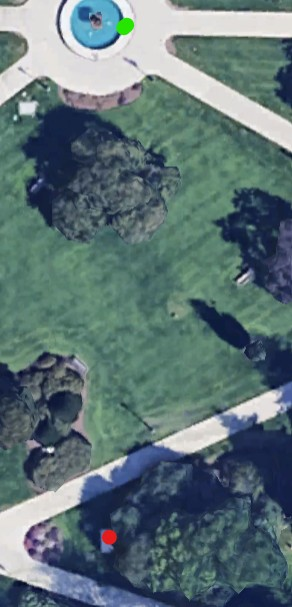

Stats
Par: 8
Distance: 169 ft
Hole Description
This hole has a rule where the concrete rule is reversed, meaning if the frisbee lands on grass it must be thrown upside down, and if the frisbee lands on concrete it can be thrown right side up. The first throw must be upside down and is from the up on the side of the fountain, the target is the brown/brass part of the statue in the intersection ahead.
Map key: green dot starting box, red dot target, blue dot mandatory.